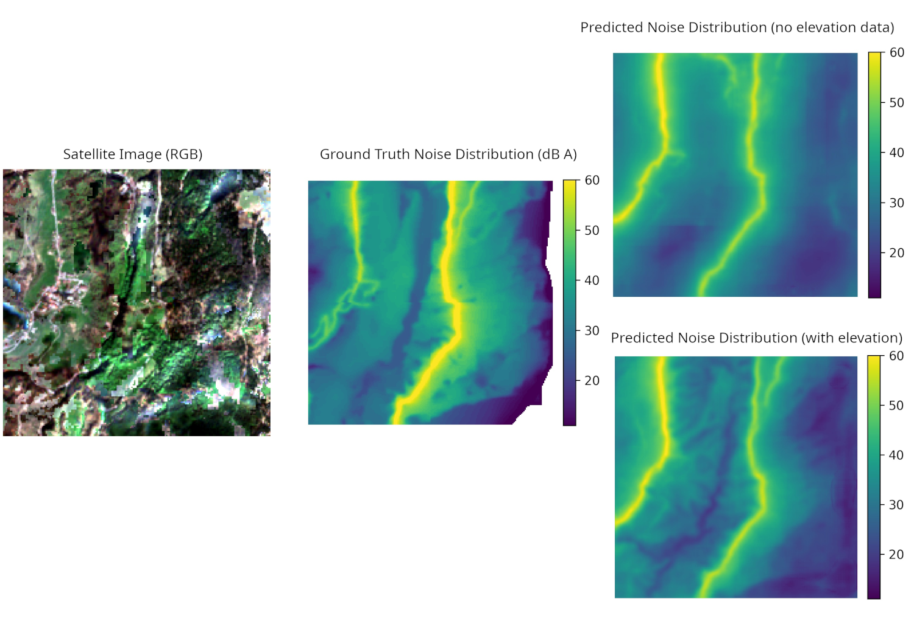

Deep Learning hat schon in vielen Bereichen der Fernerkundung sein Potenzial unter Beweis stellen können. Ein Beispiel hierfür ist Bestimmung von Landnutzung und Landbedeckung aus Satelliten- und Luftbildern.
Vielleicht kann man aber noch einen Schritt weiter gehen: Hat ein KI-Modell erst einmal gelernt, wie bestimmte Dinge zusammenhängen, kann man ihm auch „Was wäre, wenn?“-Fragen stellen? Man verändert gezielt die Daten, die man dem Modell gibt, und beobachtet, wie sich seine Antwort verändert. So ließe sich eine KI als eine Art vereinfachter Simulator nutzen, zum Beispiel in sogenannten digitalen Zwillingen. Das sind virtuelle Abbilder echter Städte oder Landschaften, an denen man Veränderungen ausprobieren kann, bevor man sie in der Wirklichkeit umsetzt.
Beispiel: Straßenlärm
Wir untersuchen diese Idee am Beispiel von Verkehrslärm. In einem früheren Projekt konnten wir bereits zeigen, dass eine KI allein anhand von Satellitenbildern die Straßenlärmbelastung abschätzen kann. Die Satellitenbilder stammen dabei von den Sentinel-2 Satelliten, welche eine maximale Auflösung von 10m je Pixel bereitstellen.
In der Masterarbeit von Sunita Joshi entwickeln wir dieses Modell weiter. Zusätzlich zu den Satellitenbildern erhält die KI nun Informationen über die Höhe der Erdoberfläche an jedem Bildpunkt. Solche Informationen über den Geländeverlauf sind besonders für die Untersuchung von Lärm wichtig, denn Schall breitet sich nicht ungehindert aus: Hindernisse können ihn abschirmen.
{kind=link}

Lärmschutzwände am Computer ausprobieren
Die Frage lautet nun: Kann man eine auf Lärmdaten trainierte KI dazu nutzen, Lärmschutz virtuell zu testen? Dazu „bauen“ wir in der Höhenkarte künstliche Erhebungen ein, etwa dort, wo eine Lärmschutzwand stehen könnte. Anschließend prüfen wir, ob die KI daraufhin weniger Lärm hinter dieser Wand vorhersagt, so wie es in der Realität zu erwarten wäre.
Die qualitativen Ergebnisse der Arbeit unterstützen diese Hypothese. Das trainierte Modell ist klar dazu in der Lage, Hindernisse zu erkennen und die Dämmung des Schalls zu simulieren. Eine große Einschränkung hierbei ist, dass es sich nicht um ein physikalisch korrektes Modell handelt, sondern um ein Surrogatmodell.
In weiteren Arbeiten versuchen wir, dieses Modell weiter zu verbessern und anzupassen, damit die Ergebnisse besser an physikalische Modelle angepasst werden können.
Diese Arbeit wurde auf dem Nationalen Forum für Fernerkundung und Copernicus (28.-30. April 2026) in Darmstadt präsentiert.